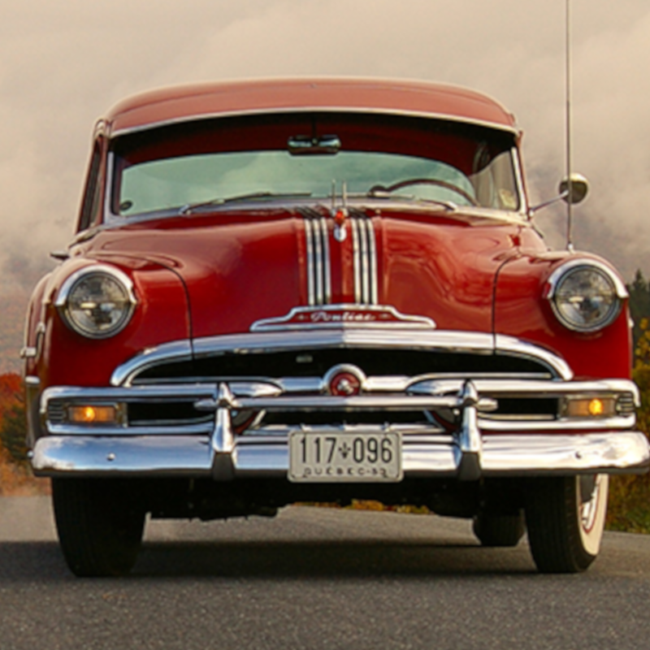
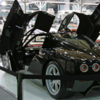

Projet final par Alvin Biju et Ghassan
ID
Description d'une automobile
Histoire des automobiles
Les voitures électriques
Voitures puissantes
Description d'une automobile
Histoire des automobiles

Les voitures électriques
Voitures puissantes

Autres pages
Les voitures puissantes
Histoire des Lamborginis
Les voitures électriques